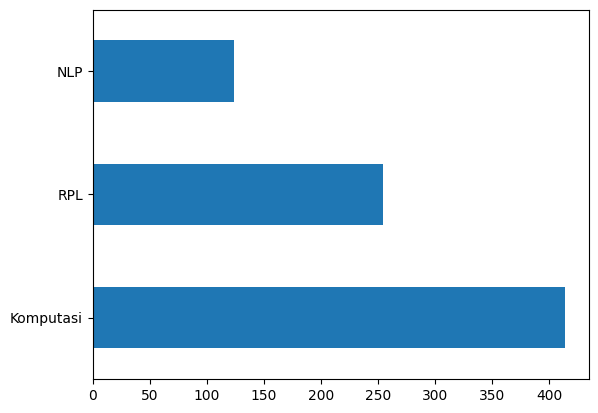

Preprocessing#
import numpy as np
import pandas as pd
df = pd.read_excel('/content/drive/MyDrive/datamining/tugas/data/PtaLabel2.xlsx')
# df = df.drop(['Unnamed: 0.1'], axis=1)
df.head()
| NIM | Nama | Judul | Abstrak | Kelas | |
|---|---|---|---|---|---|
| 0 | 40411100468 | A.Ubaidillah S.Kom | PERANCANGAN DAN IMPLEMENTASI SISTEM DATABASE T... | Sistem informasi akademik (SIAKAD) merupaka... | RPL |
| 1 | 40411100476 | M. Basith Ardianto, | APLIKASI KONTROL DAN MONITORING JARINGAN KOMPU... | Berjalannya koneksi jaringan komputer dengan l... | RPL |
| 2 | 70411100070 | Heri Supriyanto | SISTEM PENDUKUNG KEPUTUSAN OPTIMASI PENJADWALA... | Penjadwalan kuliah di Perguruan Tinggi me... | Komputasi |
| 3 | 80411100115 | Septian Rahman Hakim | SISTEM AUGMENTED REALITY ANIMASI BENDA BERGERA... | Seiring perkembangan teknologi yang ada diduni... | Komputasi |
| 4 | 70411100007 | Adi Chandra Laksono | Gerak Pekerja Pada Game Real Time Strategy Men... | Gerak pekerja ada pada game yang memiliki genr... | RPL |
1. Data Exploration#
# count nan value
df.isnull().sum()
NIM 0
Nama 0
Judul 0
Abstrak 3
Kelas 0
dtype: int64
df.dropna(inplace=True)
df.isnull().sum()
NIM 0
Nama 0
Judul 0
Abstrak 0
Kelas 0
dtype: int64
df.count()
NIM 795
Nama 795
Judul 795
Abstrak 795
Kelas 795
dtype: int64
df.tail()
| NIM | Nama | Judul | Abstrak | Kelas | |
|---|---|---|---|---|---|
| 793 | 160411100032 | Rachmad Agung Pambudi | PENERAPAN ALGORITMA LONG-SHORT TERM MEMORY UNT... | Investasi saham selama ini memiliki resiko ker... | NLP |
| 794 | 160411100182 | Nadila Hidayanti | SISTEM PENCARIAN TEKS AL-QURAN TERJEMAHAN BERB... | Information Retrieval (IR) merupakan pengambil... | Komputasi |
| 795 | 160411100077 | Afni Sakinah | KLASIFIKASI KOMPLEKSITAS VISUAL CITRA SAMPAH M... | Klasifikasi citra merupakan proses pengelompok... | Komputasi |
| 796 | 160411100084 | Friska Fatmawatiningrum | IDENTIFIKASI BINER ATRIBUT PEJALAN KAKI MENGGU... | Identifikasi atribut pejalan kaki merupakan sa... | NLP |
| 797 | 160411100044 | Dian Wibowo | DETEKSI OBJEK MANUSIA BERBASIS ONE STAGE DETEC... | Topik deteksi objek telah menarik perhatian ya... | Komputasi |
# Jumlah data pada masing-masing label KBK
df['Kelas'].value_counts()
Komputasi 417
RPL 254
NLP 124
Name: Kelas, dtype: int64
import matplotlib.pyplot as plt
df['Kelas'].value_counts().plot(kind='barh')
plt.show()

2. Text Preprocessing#
Text Cleaning#
import re, string
# Text Cleaning
def cleaning(text):
# HTML Tag Removal
text = re.compile('<.*?>|&([a-z0-9]+|#[0-9]{1,6}|#x[0-9a-f]{1,6});').sub('', str(text))
# Case folding
text = text.lower()
# Trim text
text = text.strip()
# Remove punctuations, karakter spesial, and spasi ganda
text = re.compile('<.*?>').sub('', text)
text = re.compile('[%s]' % re.escape(string.punctuation)).sub(' ', text)
text = re.sub('\s+', ' ', text)
# Number removal
text = re.sub(r'\[[0-9]*\]', ' ', text)
text = re.sub(r'[^\w\s]', '', str(text).lower().strip())
text = re.sub(r'\d', ' ', text)
text = re.sub(r'\s+', ' ', text)
# Mengubah text 'nan' dengan whitespace agar nantinya dapat dihapus
text = re.sub('nan', '', text)
return text
df['Judul'] = df['Judul'].apply(lambda x: cleaning(x))
df['Abstrak'] = df['Abstrak'].apply(lambda x: cleaning(x))
df.head()
| NIM | Nama | Judul | Abstrak | Kelas | |
|---|---|---|---|---|---|
| 0 | 40411100468 | A.Ubaidillah S.Kom | perancangan dan implementasi sistem database t... | sistem informasi akademik siakad merupakan sis... | RPL |
| 1 | 40411100476 | M. Basith Ardianto, | aplikasi kontrol dan monitoring jaringan kompu... | berjalannya koneksi jaringan komputer dengan l... | RPL |
| 2 | 70411100070 | Heri Supriyanto | sistem pendukung keputusan optimasi penjadwala... | penjadwalan kuliah di perguruan tinggi merupak... | Komputasi |
| 3 | 80411100115 | Septian Rahman Hakim | sistem augmented reality animasi benda bergera... | seiring perkembangan teknologi yang ada diduni... | Komputasi |
| 4 | 70411100007 | Adi Chandra Laksono | gerak pekerja pada game real time strategy men... | gerak pekerja ada pada game yang memiliki genr... | RPL |
# Checkpoint: Export Hasil Text Cleaning
df.to_csv('cleaning_data_PTA.csv')
Remove Missing Values#
# Ubah empty string menjadi NaN value
df = df.replace('', np.nan)
# Cek missing values
df.isnull().sum()
NIM 0
Nama 0
Judul 0
Abstrak 2
Kelas 0
dtype: int64
# Remove missing values
df.dropna(inplace=True)
len(df)
793
Remove Duplicate Values#
# Cek apakah terdapat duplikasi data pada kolom judul
df[df['Judul'].duplicated()]
| NIM | Nama | Judul | Abstrak | Kelas | |
|---|---|---|---|---|---|
| 673 | 120411100015 | Abdul Ainur Rofik | sistem pendukung keputusan pemilihan pemain bo... | peningkatan pembinaan permai bola voli terutam... | Komputasi |
# Remove duplicates judul
df.drop_duplicates(subset=['Judul'], inplace=True)
# Cek apakah masih terdapat duplikasi data pada kolom judul
df[df['Judul'].duplicated()]
| NIM | Nama | Judul | Abstrak | Kelas |
|---|
# Cek apakah terdapat duplikasi data pada kolom abstrak
df[df['Abstrak'].duplicated()]
| NIM | Nama | Judul | Abstrak | Kelas |
|---|
# Remove duplicates abstrak
df.drop_duplicates(subset=['Abstrak'], inplace=True)
# Cek apakah masih terdapat duplikasi data pada kolom abstrak
df[df['Abstrak'].duplicated()]
| NIM | Nama | Judul | Abstrak | Kelas |
|---|
# Checkpoint: Export Hasil Preprocessing
df.to_csv('preprocessed_PTA.csv')
# Distribusi Kelas setelah Text Preprocessing
df['Kelas'].value_counts().plot(kind='barh')
plt.show()

Tokenization#
import nltk
nltk.download('punkt')
[nltk_data] Downloading package punkt to /root/nltk_data...
[nltk_data] Unzipping tokenizers/punkt.zip.
True
from nltk.tokenize import word_tokenize
# Tokenizing Judul
df['judul_tokens'] = df['Judul'].apply(lambda x: word_tokenize(x))
df[["Judul", "judul_tokens"]].head()
| Judul | judul_tokens | |
|---|---|---|
| 0 | perancangan dan implementasi sistem database t... | [perancangan, dan, implementasi, sistem, datab... |
| 1 | aplikasi kontrol dan monitoring jaringan kompu... | [aplikasi, kontrol, dan, monitoring, jaringan,... |
| 2 | sistem pendukung keputusan optimasi penjadwala... | [sistem, pendukung, keputusan, optimasi, penja... |
| 3 | sistem augmented reality animasi benda bergera... | [sistem, augmented, reality, animasi, benda, b... |
| 4 | gerak pekerja pada game real time strategy men... | [gerak, pekerja, pada, game, real, time, strat... |
# Tokenizing Abstrak
df['abstrak_tokens'] = df['Abstrak'].apply(lambda x: word_tokenize(x))
df[["Abstrak", "abstrak_tokens"]].head()
| Abstrak | abstrak_tokens | |
|---|---|---|
| 0 | sistem informasi akademik siakad merupakan sis... | [sistem, informasi, akademik, siakad, merupaka... |
| 1 | berjalannya koneksi jaringan komputer dengan l... | [berjalannya, koneksi, jaringan, komputer, den... |
| 2 | penjadwalan kuliah di perguruan tinggi merupak... | [penjadwalan, kuliah, di, perguruan, tinggi, m... |
| 3 | seiring perkembangan teknologi yang ada diduni... | [seiring, perkembangan, teknologi, yang, ada, ... |
| 4 | gerak pekerja ada pada game yang memiliki genr... | [gerak, pekerja, ada, pada, game, yang, memili... |
Stop Words Removal#
import nltk
nltk.download('stopwords')
[nltk_data] Downloading package stopwords to /root/nltk_data...
[nltk_data] Unzipping corpora/stopwords.zip.
True
from nltk.corpus import stopwords
from itertools import chain
stop_words = set(chain(stopwords.words('indonesian'), stopwords.words('english')))
df['judul_tokens'] = df['judul_tokens'].apply(lambda x: [w for w in x if not w in stop_words])
df['abstrak_tokens'] = df['abstrak_tokens'].apply(lambda x: [w for w in x if not w in stop_words])
df[["Judul", "judul_tokens"]].head()
| Judul | judul_tokens | |
|---|---|---|
| 0 | perancangan dan implementasi sistem database t... | [perancangan, implementasi, sistem, database, ... |
| 1 | aplikasi kontrol dan monitoring jaringan kompu... | [aplikasi, kontrol, monitoring, jaringan, komp... |
| 2 | sistem pendukung keputusan optimasi penjadwala... | [sistem, pendukung, keputusan, optimasi, penja... |
| 3 | sistem augmented reality animasi benda bergera... | [sistem, augmented, reality, animasi, benda, b... |
| 4 | gerak pekerja pada game real time strategy men... | [gerak, pekerja, game, real, time, strategy, f... |
df[["Abstrak", "abstrak_tokens"]].head()
| Abstrak | abstrak_tokens | |
|---|---|---|
| 0 | sistem informasi akademik siakad merupakan sis... | [sistem, informasi, akademik, siakad, sistem, ... |
| 1 | berjalannya koneksi jaringan komputer dengan l... | [berjalannya, koneksi, jaringan, komputer, lan... |
| 2 | penjadwalan kuliah di perguruan tinggi merupak... | [penjadwalan, kuliah, perguruan, kompleks, per... |
| 3 | seiring perkembangan teknologi yang ada diduni... | [seiring, perkembangan, teknologi, didunia, mu... |
| 4 | gerak pekerja ada pada game yang memiliki genr... | [gerak, pekerja, game, memiliki, genre, rts, r... |
Stemming#
!pip install sastrawi
Looking in indexes: https://pypi.org/simple, https://us-python.pkg.dev/colab-wheels/public/simple/
Collecting sastrawi
Downloading Sastrawi-1.0.1-py2.py3-none-any.whl (209 kB)
?25l 0.0/209.7 kB ? eta -:--:--
204.8/209.7 kB 11.5 MB/s eta 0:00:01
204.8/209.7 kB 11.5 MB/s eta 0:00:01
204.8/209.7 kB 11.5 MB/s eta 0:00:01
209.7/209.7 kB 1.6 MB/s eta 0:00:00
?25h
Installing collected packages: sastrawi
Successfully installed sastrawi-1.0.1
from Sastrawi.Stemmer.StemmerFactory import StemmerFactory
from tqdm.auto import tqdm
tqdm.pandas()
factory = StemmerFactory()
stemmer = factory.create_stemmer()
# Stemming judul
df['judul_tokens'] = df['judul_tokens'].progress_apply(lambda x: stemmer.stem(' '.join(x)).split(' '))
KeyboardInterruptTraceback (most recent call last)
<ipython-input-31-e0b86e6d011c> in <cell line: 2>()
1 # Stemming judul
----> 2 df['judul_tokens'] = df['judul_tokens'].progress_apply(lambda x: stemmer.stem(' '.join(x)).split(' '))
/usr/local/lib/python3.10/dist-packages/tqdm/std.py in inner(df, func, *args, **kwargs)
803 # on the df using our wrapper (which provides bar updating)
804 try:
--> 805 return getattr(df, df_function)(wrapper, **kwargs)
806 finally:
807 t.close()
/usr/local/lib/python3.10/dist-packages/pandas/core/series.py in apply(self, func, convert_dtype, args, **kwargs)
4769 dtype: float64
4770 """
-> 4771 return SeriesApply(self, func, convert_dtype, args, kwargs).apply()
4772
4773 def _reduce(
/usr/local/lib/python3.10/dist-packages/pandas/core/apply.py in apply(self)
1121
1122 # self.f is Callable
-> 1123 return self.apply_standard()
1124
1125 def agg(self):
/usr/local/lib/python3.10/dist-packages/pandas/core/apply.py in apply_standard(self)
1172 else:
1173 values = obj.astype(object)._values
-> 1174 mapped = lib.map_infer(
1175 values,
1176 f,
/usr/local/lib/python3.10/dist-packages/pandas/_libs/lib.pyx in pandas._libs.lib.map_infer()
/usr/local/lib/python3.10/dist-packages/tqdm/std.py in wrapper(*args, **kwargs)
798 # take a fast or slow code path; so stop when t.total==t.n
799 t.update(n=1 if not t.total or t.n < t.total else 0)
--> 800 return func(*args, **kwargs)
801
802 # Apply the provided function (in **kwargs)
<ipython-input-31-e0b86e6d011c> in <lambda>(x)
1 # Stemming judul
----> 2 df['judul_tokens'] = df['judul_tokens'].progress_apply(lambda x: stemmer.stem(' '.join(x)).split(' '))
/usr/local/lib/python3.10/dist-packages/Sastrawi/Stemmer/CachedStemmer.py in stem(self, text)
18 stems.append(self.cache.get(word))
19 else:
---> 20 stem = self.delegatedStemmer.stem(word)
21 self.cache.set(word, stem)
22 stems.append(stem)
/usr/local/lib/python3.10/dist-packages/Sastrawi/Stemmer/Stemmer.py in stem(self, text)
25
26 for word in words:
---> 27 stems.append(self.stem_word(word))
28
29 return ' '.join(stems)
/usr/local/lib/python3.10/dist-packages/Sastrawi/Stemmer/Stemmer.py in stem_word(self, word)
34 return self.stem_plural_word(word)
35 else:
---> 36 return self.stem_singular_word(word)
37
38 def is_plural(self, word):
/usr/local/lib/python3.10/dist-packages/Sastrawi/Stemmer/Stemmer.py in stem_singular_word(self, word)
82 """Stem a singular word to its common stem form."""
83 context = Context(word, self.dictionary, self.visitor_provider)
---> 84 context.execute()
85
86 return context.result
/usr/local/lib/python3.10/dist-packages/Sastrawi/Stemmer/Context/Context.py in execute(self)
35
36 #step 1 - 5
---> 37 self.start_stemming_process()
38
39 #step 6
/usr/local/lib/python3.10/dist-packages/Sastrawi/Stemmer/Context/Context.py in start_stemming_process(self)
78
79 #step 4, 5
---> 80 self.remove_prefixes()
81 if self.dictionary.contains(self.current_word):
82 return
/usr/local/lib/python3.10/dist-packages/Sastrawi/Stemmer/Context/Context.py in remove_prefixes(self)
87 def remove_prefixes(self):
88 for i in range(3):
---> 89 self.accept_prefix_visitors(self.prefix_pisitors)
90 if self.dictionary.contains(self.current_word):
91 return
/usr/local/lib/python3.10/dist-packages/Sastrawi/Stemmer/Context/Context.py in accept_prefix_visitors(self, visitors)
108 removalCount = len(self.removals)
109 for visitor in visitors:
--> 110 self.accept(visitor)
111 if self.dictionary.contains(self.current_word):
112 return self.current_word
/usr/local/lib/python3.10/dist-packages/Sastrawi/Stemmer/Context/Context.py in accept(self, visitor)
95
96 def accept(self, visitor):
---> 97 visitor.visit(self)
98
99 def accept_visitors(self, visitors):
/usr/local/lib/python3.10/dist-packages/Sastrawi/Stemmer/Context/Visitor/AbstractDisambiguatePrefixRule.py in visit(self, context)
13 for disambiguator in self.disambiguators:
14 result = disambiguator.disambiguate(context.current_word)
---> 15 if context.dictionary.contains(result):
16 break
17
KeyboardInterrupt:
# Hasil stemming judul
df[["Judul", "judul_tokens"]].head()
| Judul | judul_tokens | |
|---|---|---|
| 0 | perancangan dan implementasi sistem database t... | [ancang, implementasi, sistem, database, distr... |
| 1 | aplikasi kontrol dan monitoring jaringan kompu... | [aplikasi, kontrol, monitoring, jaring, komput... |
| 2 | sistem pendukung keputusan optimasi penjadwala... | [sistem, dukung, putus, optimasi, jadwal, mata... |
| 3 | sistem augmented reality animasi benda bergera... | [sistem, augmented, reality, animasi, benda, g... |
| 4 | gerak pekerja pada game real time strategy men... | [gerak, kerja, game, real, time, strategy, fin... |
# Stemming abstrak
df['abstrak_tokens'] = df['abstrak_tokens'].progress_apply(lambda x: stemmer.stem(' '.join(x)).split(' '))
# Hasil stemming abstrak
df[["Abstrak", "abstrak_tokens"]].head()
| Abstrak | abstrak_tokens | |
|---|---|---|
| 0 | sistem informasi akademik siakad merupakan sis... | [sistem, informasi, akademik, siakad, sistem, ... |
| 1 | berjalannya koneksi jaringan komputer dengan l... | [jalan, koneksi, jaring, komputer, lancar, gan... |
| 2 | penjadwalan kuliah di perguruan tinggi merupak... | [jadwal, kuliah, guru, kompleks, masalah, vari... |
| 3 | seiring perkembangan teknologi yang ada diduni... | [iring, kembang, teknologi, dunia, muncul, tek... |
| 4 | gerak pekerja ada pada game yang memiliki genr... | [gerak, kerja, game, milik, genre, rts, real, ... |
Export Cleaned Data#
df
| NIM | Nama | Judul | Abstrak | Kelas | judul_tokens | abstrak_tokens | |
|---|---|---|---|---|---|---|---|
| 0 | 40411100468 | A.Ubaidillah S.Kom | perancangan dan implementasi sistem database t... | sistem informasi akademik siakad merupakan sis... | RPL | [ancang, implementasi, sistem, database, distr... | [sistem, informasi, akademik, siakad, sistem, ... |
| 1 | 40411100476 | M. Basith Ardianto, | aplikasi kontrol dan monitoring jaringan kompu... | berjalannya koneksi jaringan komputer dengan l... | RPL | [aplikasi, kontrol, monitoring, jaring, komput... | [jalan, koneksi, jaring, komputer, lancar, gan... |
| 2 | 70411100070 | Heri Supriyanto | sistem pendukung keputusan optimasi penjadwala... | penjadwalan kuliah di perguruan tinggi merupak... | Komputasi | [sistem, dukung, putus, optimasi, jadwal, mata... | [jadwal, kuliah, guru, kompleks, masalah, vari... |
| 3 | 80411100115 | Septian Rahman Hakim | sistem augmented reality animasi benda bergera... | seiring perkembangan teknologi yang ada diduni... | Komputasi | [sistem, augmented, reality, animasi, benda, g... | [iring, kembang, teknologi, dunia, muncul, tek... |
| 4 | 70411100007 | Adi Chandra Laksono | gerak pekerja pada game real time strategy men... | gerak pekerja ada pada game yang memiliki genr... | RPL | [gerak, kerja, game, real, time, strategy, fin... | [gerak, kerja, game, milik, genre, rts, real, ... |
| ... | ... | ... | ... | ... | ... | ... | ... |
| 793 | 160411100032 | Rachmad Agung Pambudi | penerapan algoritma long short term memory unt... | investasi saham selama ini memiliki resiko ker... | NLP | [terap, algoritma, long, short, term, memory, ... | [investasi, saham, milik, resiko, rugi, gera, ... |
| 794 | 160411100182 | Nadila Hidayanti | sistem pencarian teks al quran terjemahan berb... | information retrieval ir merupakan pengambilan... | Komputasi | [sistem, cari, teks, al, quran, terjemah, baha... | [information, retrieval, ir, ambil, informasi,... |
| 795 | 160411100077 | Afni Sakinah | klasifikasi kompleksitas visual citra sampah m... | klasifikasi citra merupakan proses pengelompok... | Komputasi | [klasifikasi, kompleksitas, visual, citra, sam... | [klasifikasi, citra, proses, kelompok, piksel,... |
| 796 | 160411100084 | Friska Fatmawatiningrum | identifikasi biner atribut pejalan kaki menggu... | identifikasi atribut pejalan kaki merupakan sa... | NLP | [identifikasi, biner, atribut, pejal, kaki, ad... | [identifikasi, atribut, pejal, kaki, salah, te... |
| 797 | 160411100044 | Dian Wibowo | deteksi objek manusia berbasis one stage detec... | topik deteksi objek telah menarik perhatian ya... | Komputasi | [deteksi, objek, manusia, bas, one, stage, det... | [topik, deteksi, objek, tarik, perhati, kemban... |
793 rows 7 columns
df['judul_tokens'] = df['judul_tokens'].apply(lambda x: ' '.join(x))
df['abstrak_tokens'] = df['abstrak_tokens'].apply(lambda x: ' '.join(x))
df.to_csv('cleaned-data-kelas.csv')
Classification#
Load Preprocessed Data#
import numpy as np
import pandas as pd
df = pd.read_csv('/content/drive/MyDrive/datamining/tugas/data/cleaned-data-kelas.csv', index_col=0)
df.head()
| NIM | Nama | Judul | Abstrak | Kelas | judul_tokens | abstrak_tokens | |
|---|---|---|---|---|---|---|---|
| 0 | 40411100468 | A.Ubaidillah S.Kom | perancangan dan implementasi sistem database t... | sistem informasi akademik siakad merupakan sis... | RPL | ancang implementasi sistem database distribusi... | sistem informasi akademik siakad sistem inform... |
| 1 | 40411100476 | M. Basith Ardianto, | aplikasi kontrol dan monitoring jaringan kompu... | berjalannya koneksi jaringan komputer dengan l... | RPL | aplikasi kontrol monitoring jaring komputer ba... | jalan koneksi jaring komputer lancar ganggu ha... |
| 2 | 70411100070 | Heri Supriyanto | sistem pendukung keputusan optimasi penjadwala... | penjadwalan kuliah di perguruan tinggi merupak... | Komputasi | sistem dukung putus optimasi jadwal matakuliah... | jadwal kuliah guru kompleks masalah variabel t... |
| 3 | 80411100115 | Septian Rahman Hakim | sistem augmented reality animasi benda bergera... | seiring perkembangan teknologi yang ada diduni... | Komputasi | sistem augmented reality animasi benda gerak f... | iring kembang teknologi dunia muncul teknologi... |
| 4 | 70411100007 | Adi Chandra Laksono | gerak pekerja pada game real time strategy men... | gerak pekerja ada pada game yang memiliki genr... | RPL | gerak kerja game real time strategy finite sta... | gerak kerja game milik genre rts real time str... |
X = df['abstrak_tokens']
y = df['Kelas']
Feature Extraction#
TF-IDF
from sklearn.feature_extraction.text import TfidfVectorizer,CountVectorizer
countvectorizer = CountVectorizer()
tfidfvectorizer = TfidfVectorizer()
count_wm = countvectorizer.fit_transform(X)
tfidf_wm = tfidfvectorizer.fit_transform(X)
count_tokens = countvectorizer.get_feature_names_out()
tfidf_tokens = tfidfvectorizer.get_feature_names_out()
df_countvect = pd.DataFrame(data = count_wm.toarray(),columns = count_tokens)
df_tfidfvect = pd.DataFrame(data = tfidf_wm.toarray(),columns = tfidf_tokens)
print("Count Vectorizer\n")
df_countvect
Count Vectorizer
| aalysis | aam | abad | abadi | abai | abdi | ability | abjad | absah | absensi | ... | zara | zat | zcz | zf | zona | zone | zoning | zoom | zucara | zungu | |
|---|---|---|---|---|---|---|---|---|---|---|---|---|---|---|---|---|---|---|---|---|---|
| 0 | 0 | 0 | 0 | 0 | 0 | 0 | 0 | 0 | 0 | 0 | ... | 0 | 0 | 0 | 0 | 0 | 0 | 0 | 0 | 0 | 0 |
| 1 | 0 | 0 | 0 | 0 | 0 | 0 | 0 | 0 | 0 | 0 | ... | 0 | 0 | 0 | 0 | 0 | 0 | 0 | 0 | 0 | 0 |
| 2 | 0 | 0 | 0 | 0 | 0 | 0 | 0 | 0 | 0 | 0 | ... | 0 | 0 | 0 | 0 | 0 | 0 | 0 | 0 | 0 | 0 |
| 3 | 0 | 0 | 0 | 0 | 0 | 0 | 0 | 0 | 0 | 0 | ... | 0 | 0 | 0 | 0 | 0 | 0 | 0 | 0 | 0 | 0 |
| 4 | 0 | 0 | 0 | 0 | 0 | 0 | 0 | 0 | 0 | 0 | ... | 0 | 0 | 0 | 0 | 0 | 0 | 0 | 0 | 0 | 0 |
| ... | ... | ... | ... | ... | ... | ... | ... | ... | ... | ... | ... | ... | ... | ... | ... | ... | ... | ... | ... | ... | ... |
| 787 | 0 | 0 | 0 | 0 | 0 | 0 | 0 | 0 | 0 | 0 | ... | 0 | 0 | 0 | 0 | 0 | 0 | 0 | 0 | 0 | 0 |
| 788 | 0 | 0 | 0 | 0 | 0 | 0 | 0 | 0 | 0 | 0 | ... | 0 | 0 | 0 | 0 | 0 | 0 | 0 | 0 | 0 | 0 |
| 789 | 0 | 0 | 0 | 0 | 0 | 0 | 0 | 0 | 0 | 0 | ... | 0 | 0 | 0 | 0 | 0 | 0 | 0 | 0 | 0 | 0 |
| 790 | 0 | 0 | 0 | 0 | 0 | 0 | 0 | 0 | 0 | 0 | ... | 0 | 0 | 0 | 0 | 0 | 0 | 0 | 0 | 0 | 0 |
| 791 | 0 | 0 | 0 | 0 | 0 | 0 | 0 | 0 | 0 | 0 | ... | 0 | 0 | 0 | 0 | 0 | 0 | 0 | 0 | 0 | 0 |
792 rows 5965 columns
PCA
tfidf_wm.shape
(792, 5965)
# Impor library yang dibutuhkan
from sklearn.decomposition import PCA
# Inisialisasi objek PCA dengan 3 komponen
pca = PCA(n_components=3)
# Melakukan fit transform pada data
X_pca = pca.fit_transform(tfidf_wm.toarray())
X_pca.shape
(792, 3)
Split Data#
from sklearn.model_selection import train_test_split
training, test = train_test_split(X_pca,test_size=0.2, random_state=1)#Nilai X training dan Nilai X testing
training_label, test_label = train_test_split(y, test_size=0.2, random_state=1)#Nilai Y training dan Nilai Y testing
K-NN
from sklearn.neighbors import KNeighborsClassifier
from sklearn.metrics import accuracy_score
from sklearn.model_selection import GridSearchCV
from sklearn.metrics import classification_report
modelKNN = KNeighborsClassifier(n_neighbors=5)
modelKNN.fit(training, training_label)
KNeighborsClassifier()In a Jupyter environment, please rerun this cell to show the HTML representation or trust the notebook.
On GitHub, the HTML representation is unable to render, please try loading this page with nbviewer.org.
KNeighborsClassifier()
test_pred = modelKNN.predict(test)
test_pred
array(['RPL', 'RPL', 'RPL', 'Komputasi', 'Komputasi', 'Komputasi',
'Komputasi', 'RPL', 'Komputasi', 'Komputasi', 'NLP', 'Komputasi',
'Komputasi', 'Komputasi', 'RPL', 'RPL', 'RPL', 'Komputasi',
'Komputasi', 'Komputasi', 'RPL', 'RPL', 'RPL', 'RPL', 'Komputasi',
'RPL', 'NLP', 'RPL', 'Komputasi', 'RPL', 'NLP', 'Komputasi',
'Komputasi', 'Komputasi', 'Komputasi', 'RPL', 'Komputasi',
'Komputasi', 'Komputasi', 'Komputasi', 'RPL', 'Komputasi', 'RPL',
'Komputasi', 'Komputasi', 'RPL', 'Komputasi', 'NLP', 'RPL',
'Komputasi', 'RPL', 'RPL', 'RPL', 'Komputasi', 'RPL', 'RPL',
'Komputasi', 'Komputasi', 'Komputasi', 'Komputasi', 'RPL',
'Komputasi', 'RPL', 'Komputasi', 'Komputasi', 'RPL', 'Komputasi',
'Komputasi', 'Komputasi', 'Komputasi', 'NLP', 'Komputasi', 'RPL',
'Komputasi', 'NLP', 'RPL', 'Komputasi', 'Komputasi', 'RPL',
'Komputasi', 'Komputasi', 'RPL', 'RPL', 'Komputasi', 'Komputasi',
'RPL', 'Komputasi', 'Komputasi', 'Komputasi', 'RPL', 'RPL', 'RPL',
'Komputasi', 'NLP', 'Komputasi', 'RPL', 'Komputasi', 'RPL', 'RPL',
'Komputasi', 'Komputasi', 'Komputasi', 'NLP', 'Komputasi',
'Komputasi', 'Komputasi', 'Komputasi', 'RPL', 'RPL', 'RPL', 'RPL',
'RPL', 'Komputasi', 'Komputasi', 'RPL', 'Komputasi', 'Komputasi',
'Komputasi', 'Komputasi', 'RPL', 'RPL', 'NLP', 'Komputasi',
'Komputasi', 'RPL', 'Komputasi', 'Komputasi', 'RPL', 'RPL',
'Komputasi', 'Komputasi', 'Komputasi', 'RPL', 'RPL', 'Komputasi',
'Komputasi', 'RPL', 'Komputasi', 'RPL', 'Komputasi', 'RPL', 'RPL',
'RPL', 'RPL', 'RPL', 'NLP', 'RPL', 'Komputasi', 'Komputasi', 'RPL',
'Komputasi', 'Komputasi', 'Komputasi', 'Komputasi', 'Komputasi',
'Komputasi', 'Komputasi', 'RPL', 'RPL'], dtype=object)
accuracy_score(test_label, test_pred)
0.6855345911949685
print(classification_report(test_label, test_pred))
precision recall f1-score support
Komputasi 0.72 0.78 0.75 80
NLP 0.60 0.21 0.32 28
RPL 0.65 0.80 0.72 51
accuracy 0.69 159
macro avg 0.66 0.60 0.59 159
weighted avg 0.68 0.69 0.66 159
Naive Bayes#
#Model Select
from sklearn.metrics import accuracy_score
from sklearn.metrics import classification_report
from sklearn.metrics import confusion_matrix
from sklearn.naive_bayes import GaussianNB
gaussian = GaussianNB()
gaussian.fit(training, training_label)
GaussianNB()In a Jupyter environment, please rerun this cell to show the HTML representation or trust the notebook.
On GitHub, the HTML representation is unable to render, please try loading this page with nbviewer.org.
GaussianNB()
predict = gaussian.predict(test)
predict
array(['Komputasi', 'Komputasi', 'Komputasi', 'Komputasi', 'Komputasi',
'Komputasi', 'Komputasi', 'RPL', 'Komputasi', 'Komputasi',
'Komputasi', 'Komputasi', 'Komputasi', 'Komputasi', 'Komputasi',
'Komputasi', 'RPL', 'Komputasi', 'Komputasi', 'Komputasi', 'RPL',
'Komputasi', 'RPL', 'RPL', 'Komputasi', 'RPL', 'Komputasi', 'RPL',
'Komputasi', 'Komputasi', 'Komputasi', 'Komputasi', 'Komputasi',
'Komputasi', 'Komputasi', 'RPL', 'Komputasi', 'Komputasi',
'Komputasi', 'RPL', 'RPL', 'Komputasi', 'RPL', 'Komputasi',
'Komputasi', 'Komputasi', 'Komputasi', 'Komputasi', 'RPL',
'Komputasi', 'Komputasi', 'Komputasi', 'RPL', 'Komputasi',
'Komputasi', 'Komputasi', 'Komputasi', 'Komputasi', 'Komputasi',
'Komputasi', 'Komputasi', 'Komputasi', 'RPL', 'Komputasi',
'Komputasi', 'RPL', 'Komputasi', 'Komputasi', 'Komputasi',
'Komputasi', 'Komputasi', 'Komputasi', 'Komputasi', 'Komputasi',
'Komputasi', 'RPL', 'Komputasi', 'Komputasi', 'RPL', 'Komputasi',
'Komputasi', 'RPL', 'RPL', 'Komputasi', 'Komputasi', 'Komputasi',
'RPL', 'Komputasi', 'Komputasi', 'Komputasi', 'Komputasi',
'Komputasi', 'Komputasi', 'Komputasi', 'Komputasi', 'Komputasi',
'Komputasi', 'RPL', 'RPL', 'Komputasi', 'Komputasi', 'Komputasi',
'Komputasi', 'Komputasi', 'Komputasi', 'Komputasi', 'Komputasi',
'Komputasi', 'Komputasi', 'Komputasi', 'RPL', 'RPL', 'Komputasi',
'Komputasi', 'Komputasi', 'Komputasi', 'Komputasi', 'Komputasi',
'Komputasi', 'Komputasi', 'Komputasi', 'Komputasi', 'RPL',
'Komputasi', 'Komputasi', 'Komputasi', 'Komputasi', 'Komputasi',
'Komputasi', 'Komputasi', 'Komputasi', 'RPL', 'Komputasi', 'RPL',
'RPL', 'Komputasi', 'Komputasi', 'Komputasi', 'RPL', 'RPL',
'Komputasi', 'RPL', 'RPL', 'RPL', 'Komputasi', 'Komputasi',
'Komputasi', 'Komputasi', 'Komputasi', 'RPL', 'Komputasi',
'Komputasi', 'Komputasi', 'Komputasi', 'Komputasi', 'Komputasi',
'Komputasi', 'RPL', 'Komputasi'], dtype='<U9')
accuracy_score(test_label, predict)
0.5723270440251572
print(classification_report(test_label, predict))
precision recall f1-score support
Komputasi 0.56 0.88 0.69 80
NLP 0.00 0.00 0.00 28
RPL 0.60 0.41 0.49 51
accuracy 0.57 159
macro avg 0.39 0.43 0.39 159
weighted avg 0.48 0.57 0.50 159
/usr/local/lib/python3.9/dist-packages/sklearn/metrics/_classification.py:1344: UndefinedMetricWarning: Precision and F-score are ill-defined and being set to 0.0 in labels with no predicted samples. Use `zero_division` parameter to control this behavior.
_warn_prf(average, modifier, msg_start, len(result))
/usr/local/lib/python3.9/dist-packages/sklearn/metrics/_classification.py:1344: UndefinedMetricWarning: Precision and F-score are ill-defined and being set to 0.0 in labels with no predicted samples. Use `zero_division` parameter to control this behavior.
_warn_prf(average, modifier, msg_start, len(result))
/usr/local/lib/python3.9/dist-packages/sklearn/metrics/_classification.py:1344: UndefinedMetricWarning: Precision and F-score are ill-defined and being set to 0.0 in labels with no predicted samples. Use `zero_division` parameter to control this behavior.
_warn_prf(average, modifier, msg_start, len(result))